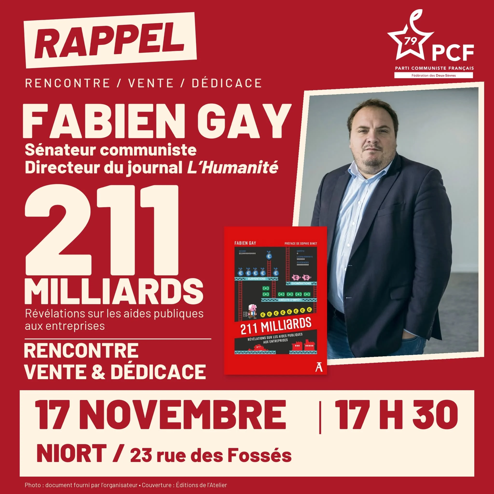

Photo
Fabien Gay à Niort le 17 novembre. Notre invitation au débat et à la dédicace
Date indiquée par Facebook · 15 novembre 2026
Texte recueilli dans le relevé Meta
N’oubliez pas la venue de Fabien Gay, sénateur PCF et directeur du journal l’Humanité, à Niort ce mardi !
17h30 au 23 rue des fossés
#FabienGay #PCF #Niort
Repères éditoriaux
Nous donnions rendez-vous à 17 h 30 au 23 rue des Fossés à Niort pour accueillir Fabien Gay, sénateur communiste et directeur de L’Humanité. Le compte rendu de la rencontre est publié sur les deux sites.

Sources
Publication de la fédération · relevé Meta · FB-1470217845291464
À lire aussi · « Et si les 211 milliards d’aides publiques aux entreprises servaient d’abord l’emploi et les salaires ? »